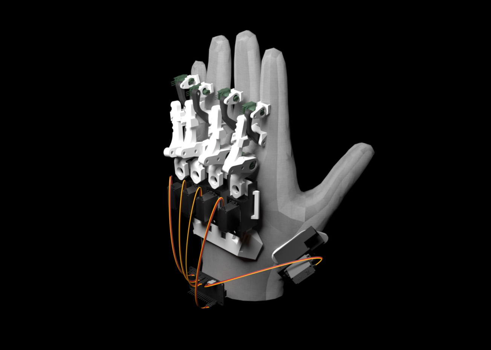

World Of
Engineering
VirtuGrip Crew
Making Virtual The New Real
iit gandhinagar, gujarat
Become part of the new era in Virtual Reality! Where we are designing the future of immersion and redefining sensation in the Virual World.
Pre-order NowAbout the product
Introducing Sparsh.
The next generation of
VR controllers.
Pre-order Now
What is Sparsh?
Sparsh is not just a VR glove - it’s a whole new way to feel the digital world. Designed for next-gen
virtual interaction, Sparsh lets your hands do more than just wave or point. Now, you can reach out,
grab, press, and actually feel virtual objects as if they were real.
Sparsh understands the natural movement of your hand - from every finger bend to subtle gestures -
and brings that precision into VR. Your virtual hand mirrors your real one in real time.
Sparsh understands the natural movement of your hand - from every finger bend to subtle gestures - and brings that precision into VR. Your virtual hand mirrors your real one in real time.
Using force-feedback technology, Sparsh adds resistance when you interact in VR. Grip a tool? You’ll feel it stop in your hand. Press a button? You’ll feel the click. It’s not just motion - it’s sensation.
Sparsh understands the natural movement of your hand - from every finger bend to subtle gestures - and brings that precision into VR. Your virtual hand mirrors your real one in real time.
Using force-feedback technology, Sparsh adds resistance when you interact in VR. Grip a tool? You’ll feel it stop in your hand. Press a button? You’ll feel the click. It’s not just motion - it’s sensation.
